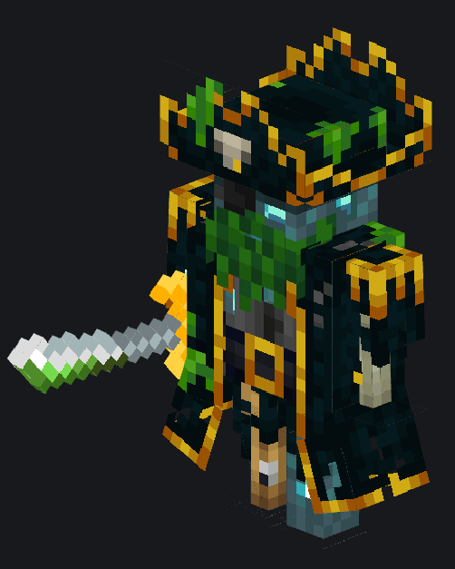

Дейви Джонс

-
Место спавна: Собственное измерение
-
Редкость: невероятно редкая
Последний босс в данном ДатаПаке, который вызывает в результате специального
Обряда
. Имеет своё собственное измерение, две стадии боя, а также несколько атак. Во время первой стадии использует лишь два вида атак: взмах саблей вверх, а также обычный бой в близи. Драка на короткой дистанции не самая лучшая против него, ибо у него маленькое отбрасывание, а также
Особая сабля
. Она у него покрыта слоем яда, что иногда отравляет игрока, которого касается. Но вот когда он делает взмах ею вверх, то тогда все игроки по близости резко начинают взлетать, после чего ровно также резко падать вниз. Когда его полоса здоровья упадёт ниже половины, то он перейдёт во вторую фазу. В ней он ещё больше будет не восприимчив к отбрасыванию, а также начнёт ещё лучше поглощать урон. Кроме этого, в момент перехода возле него появится 4
Скелета утопленника
. На последок, он также начнёт атаковать игрока ещё одной новой атакой. Всё что он делает, так это втыкает свою саблю в землю, тем самым вызывая взрыв вокруг себя. После своей смерти телепортирует игрока назад в обычный мир, а также выкидывает различные ценные предметы, включая:
Золотую чашу
,
Изумрудный амулет
, свою саблю и пластинку.